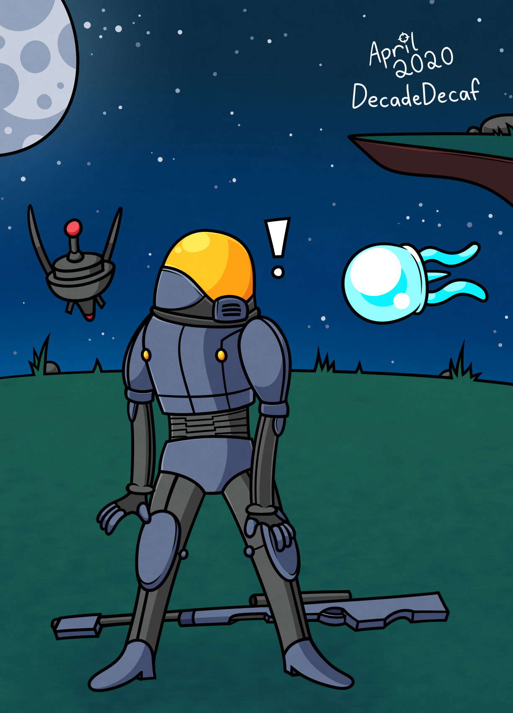
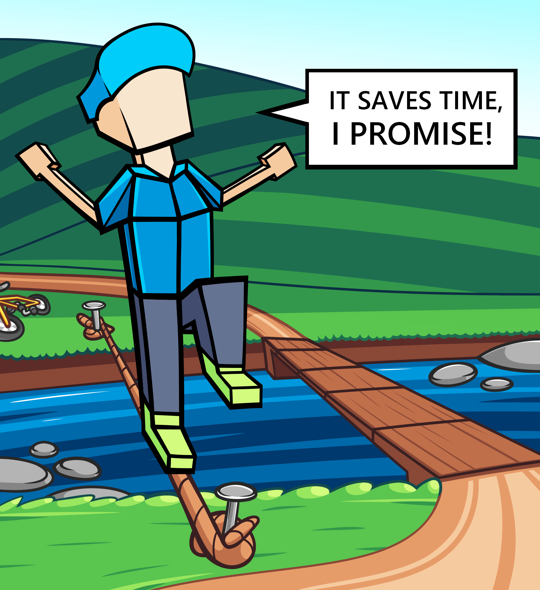
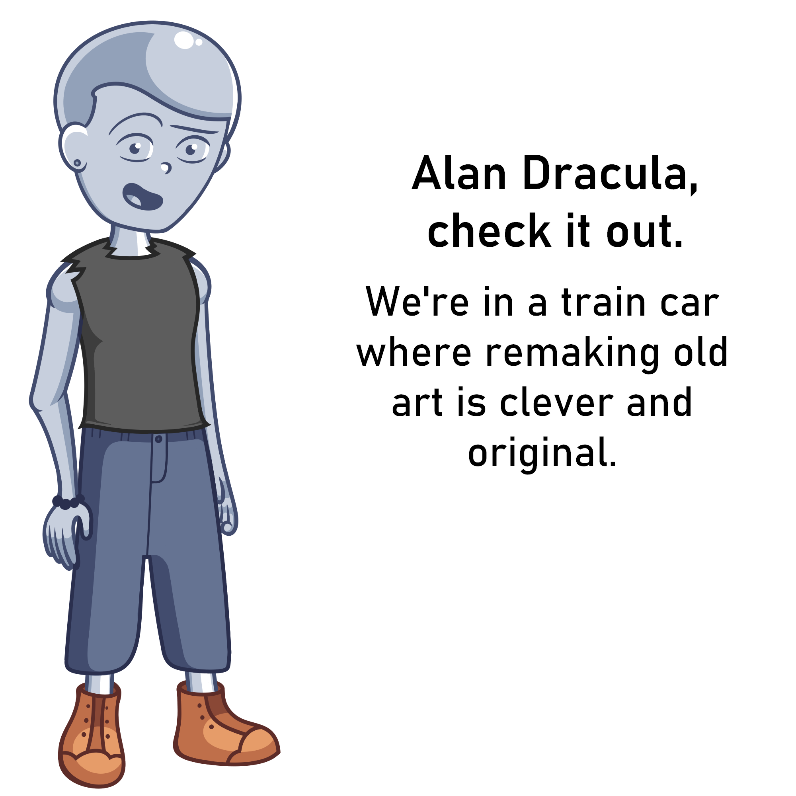
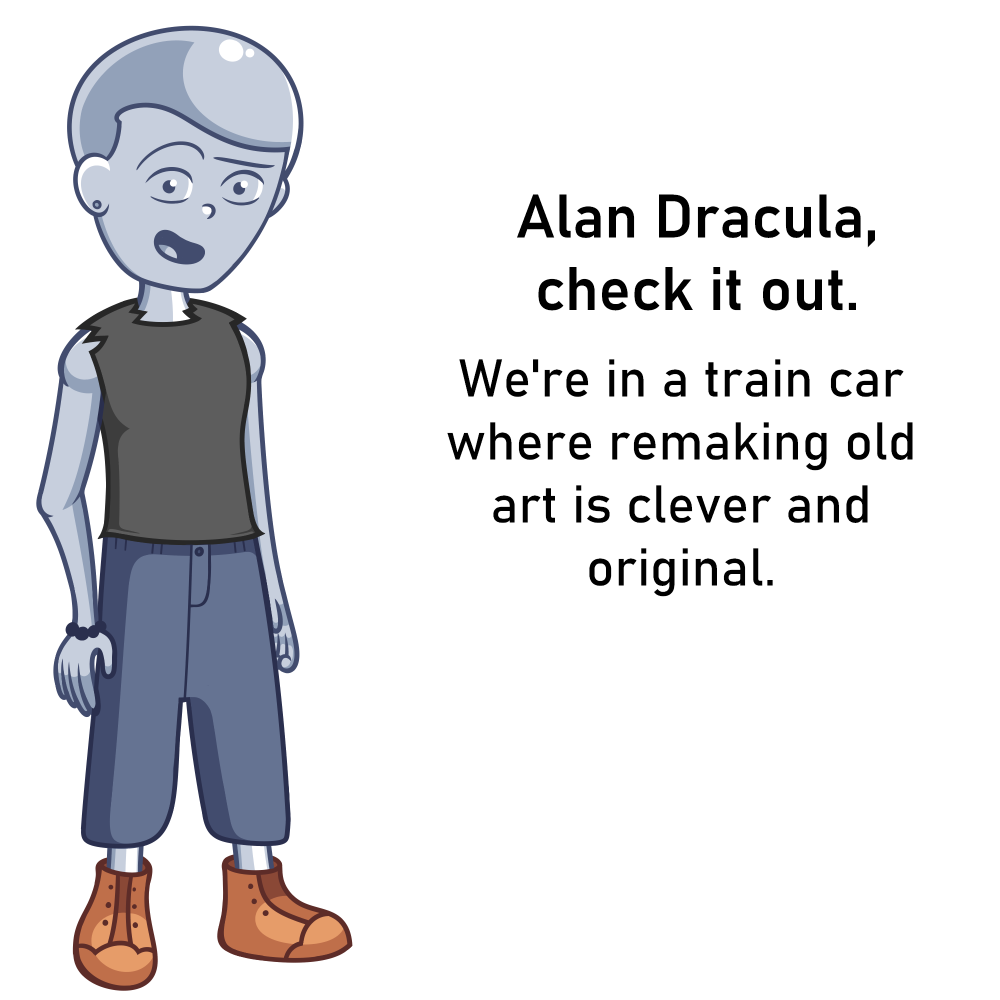
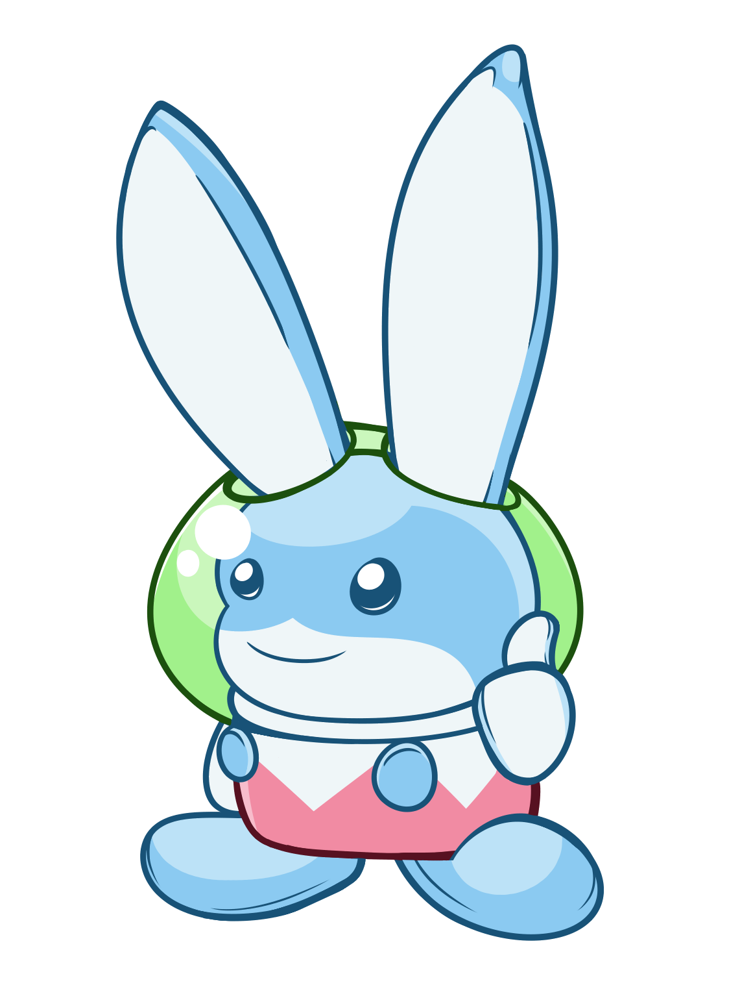

BANNER
This large-scale piece is a banner that displays many characters and objects that represent my interests, friends, and other major aspects of my life. See how many things you can recognize!

SIX CHARACTER CHALLENGE
I participated in an art challenge that got popular on Twitter a while back.

SNIPER
Risk of Rain 2 is a game that held an art contest to promote their 1.0 release. The idea was to draw a character that you wanted to be added to the game, so I drew Sniper from the first Risk of Rain.

SHORTCUT
This is fan art for a game called Lonely Mountains: Downhill. In this game, players perform risky maneuvers on their bike in order to get the lowest time possible. This drawing sees a biker abandoning his bike in order to walk a tightrope, rather than simply biking over the bridge parallel to it.

JET
This is fan art of a character named Jet from Lethal League Blaze. She is my favorite character to play as from the game.
 

TULIP and MT
These characters are from a show called Infinity Train. Infinity Train takes place on a train where every train car is unique. In the first drawing, Tulip mocks how Cartoon Network gave Infinity Train a fair run time, as opposed to some other shows. In the second drawing, MT acknowledges that the drawing itself is more or less a remake of the first.

BUNSTON
This is fan art of a character named Bunston from The Legendary Starfy. The series is very under-appreciated, in my opinion.

WYATT
In my game, Vast Forecast, Wyatt has an ability that is similar to Lucas' PK Thunder from the Super Smash Bros. series. This drawing acknowledges that by having Wyatt performing the ability similarly to how Lucas performs his.